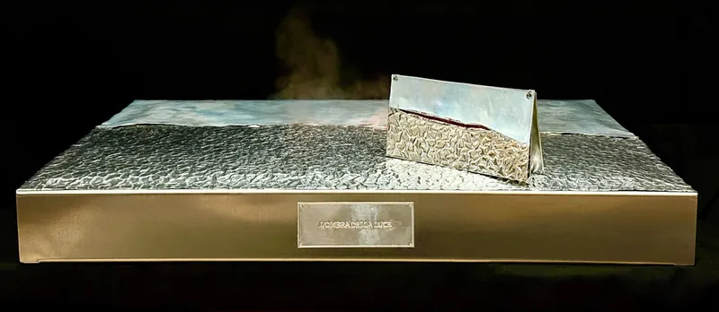

Portfolio
Artworks
The research unfolds through distinct paths within hand-chased aluminum. Each series explores a different mode of surface tension.

Structure and Tension
Hand-chased aluminum becomes dynamic structure: compressed and expanded surfaces, visual tensions between equilibrium and material resistance.

Organic Form and Figure
Metal matter transforms into organic forms and natural presences: the worked surface reveals the passage from matter to life.